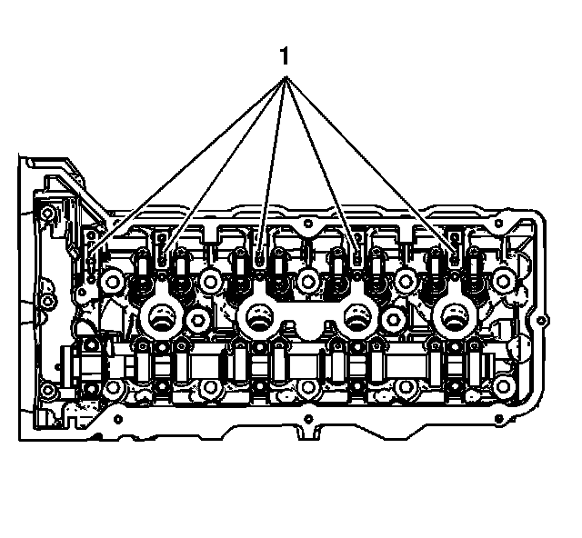
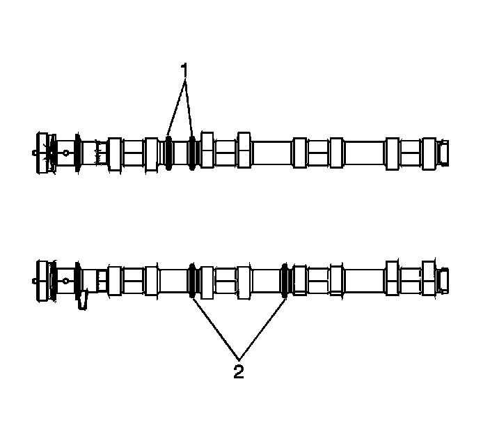
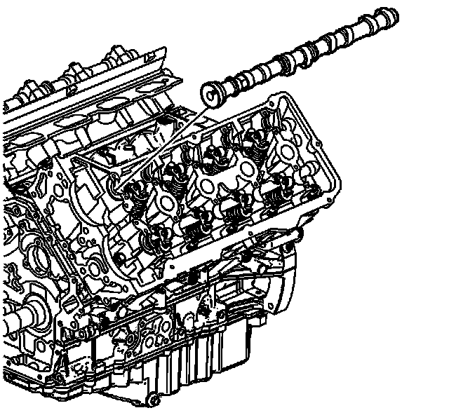
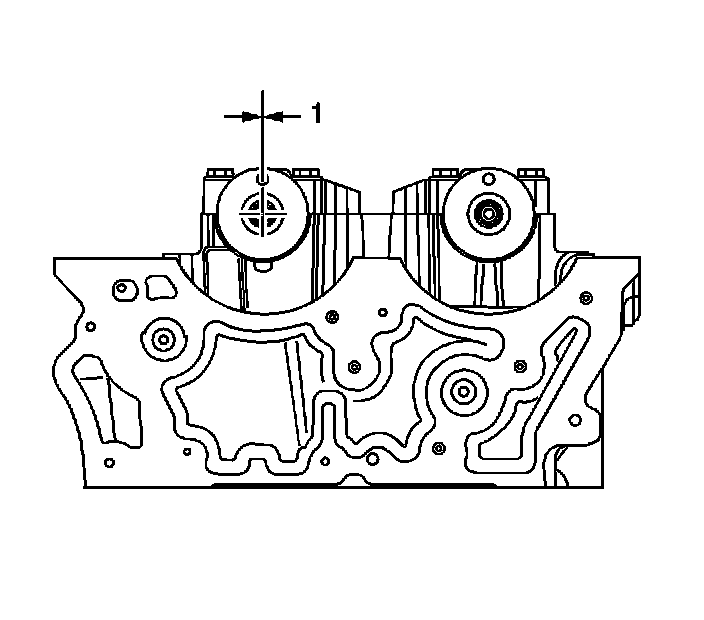
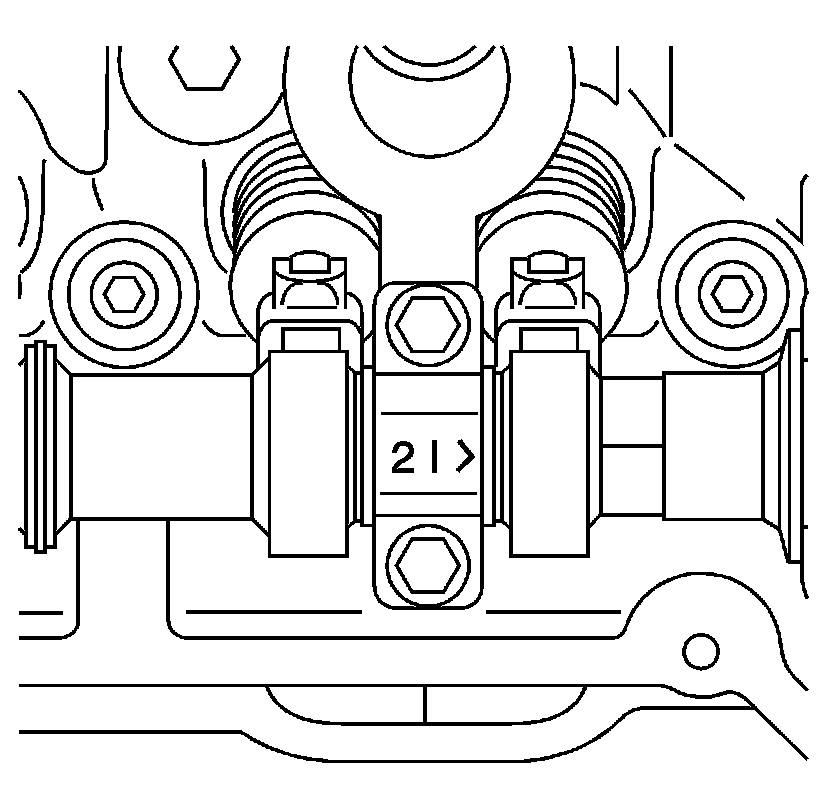
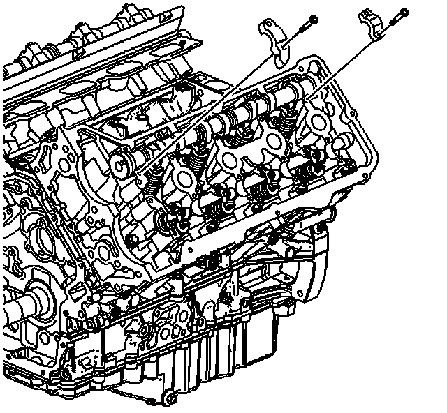
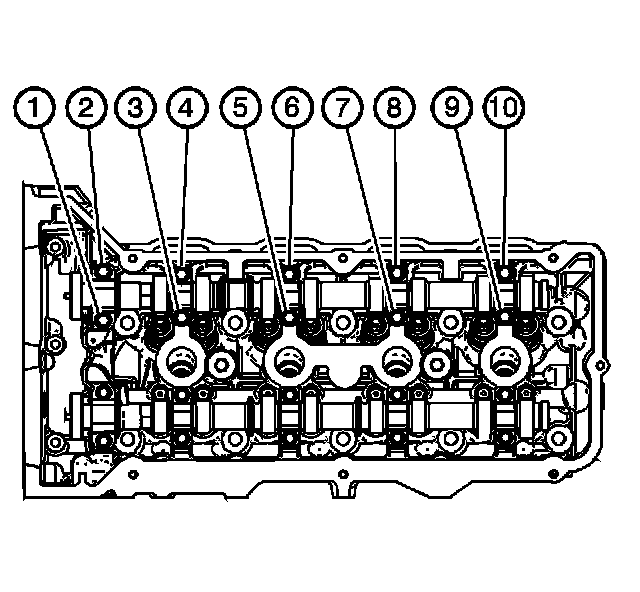

106. Intake Camshaft Installation - Left Side
Intake Camshaft Installation - Left Side
Tools Required
J 45059 Angle Meter

1. Clean the camshaft journals, camshaft and the camshaft caps with a clean, lint-free cloth.
2. Apply a liberal amount of lubricant GM P/N 12345001 or equivalent to the camshaft bearing journals (1).

3. Select the proper camshaft by the identifying rings cast into the left intake camshaft (1).

4. Apply a liberal amount of lubricant GM P/N 12345001 or equivalent to the camshaft lobes and the camshaft journals.

Important: Ensure each valve rocker arm is properly aligned to the valve tip, the valve lifter and the camshaft lobe. Inspect the alignment prior to and after the camshaft caps are tightened to specifications.
5. Place the camshaft in the camshaft journals with the camshaft sprocket drive pins near the top of their rotation (1) and the camshaft lobes in a neutral position. The camshaft can be identified by a stamping near the rear journal. For example: L-INT is defined as Left Bank Intake.

6. Observe the markings on the camshaft bearing caps. Each camshaft bearing cap is marked in order to identify its location. The markings have the following meanings:
* The arrow should point toward the front of the engine.
* The number indicates the position from the front of the engine.
* The "I" indicates the intake camshaft.
7. Apply a liberal amount of lubricant GM P/N 12345001 or equivalent to the left intake camshaft bearing cap journals.

8. Install the left intake camshaft bearing caps according to the identifications marks.
9. Hand start all the left intake camshaft bearing cap bolts.
Intake - Left:

Notice: Refer to Fastener Notice (Fastener Notice) .
Important: Ensure each valve rocker arm is properly aligned to the valve tip, the valve lifter and the camshaft lobe. Inspect the alignment prior to and after the camshaft caps are tightened to specifications.
10. Install the left cylinder head intake camshaft bearing cap bolts.
1. First Pass
Tighten the camshaft bearing cap bolts to 5 N.m (44 lb in).
2. Final Pass
Tighten the camshaft bearing cap bolts an additional 30 degrees using the J 45059 .